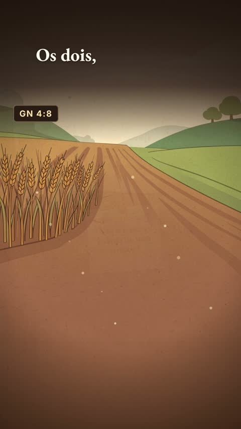
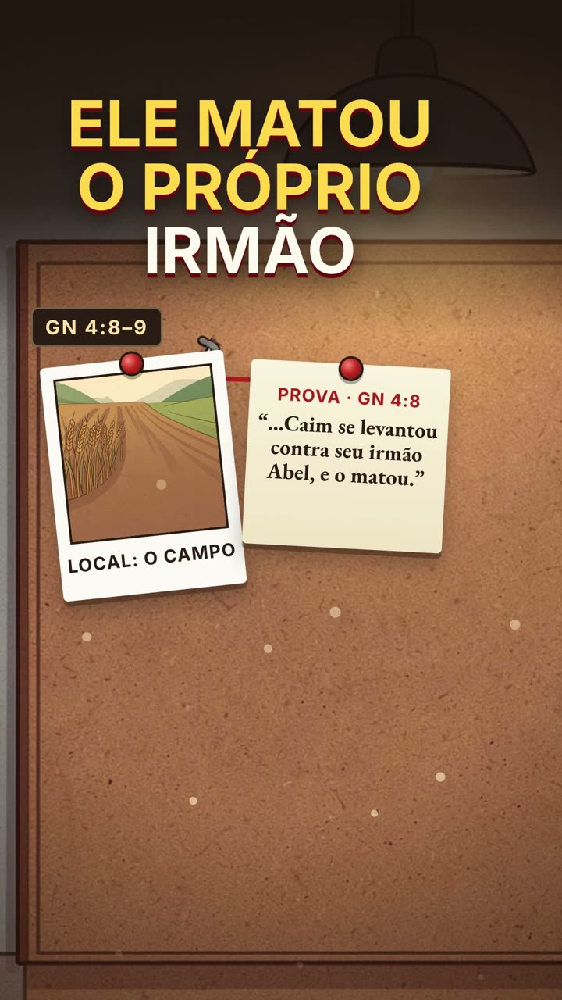
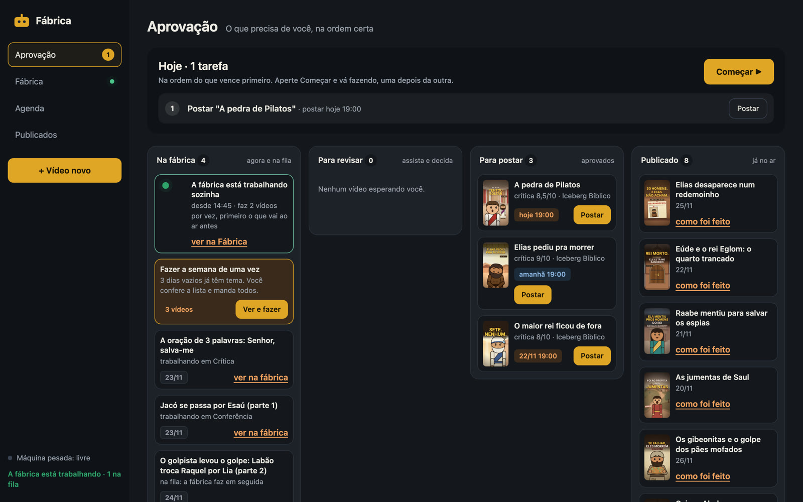

01Tema
Você escreve uma frase. É tudo o que a Fábrica precisa para começar.
Para quem quer postar todo dia sem editar
…e US$ 16.665 de receita no YouTube no mesmo mês.
162.665.999 views e US$ 16.665,68 no canal Boring History, pelo painel do YouTube, de 10/08 a 06/09/2026
Você escreve o tema em uma frase. A Fábrica escreve o roteiro, narra, anima cada cena, corta para TikTok, Reels e Shorts e faz a capa. Instalou, o primeiro vídeo sai em cerca de uma hora.
R$ 47,90 até 30/11Pagamento único7 dias de garantia
Oito etapas, sempre na mesma ordem. Role e veja o vídeo passar por cada uma.

Cenário 01 · o campo Capa
Capa
89 sAprovou, entra no calendário e posta sozinho.
Você escreve uma frase. É tudo o que a Fábrica precisa para começar.
Gancho forte no primeiro segundo e uma história que segura até o fim. Cada fala com tempo e fonte.
Outra IA confere frase por frase. O que não tem fonte volta para ser reescrito. Quem escreve nunca se confere.
Narração com a voz própria do canal, sempre a mesma. Depois ela ouve de novo e regrava o que saiu errado.
Cada cenário é desenhado para o tempo exato da voz. Nada de banco de imagem.
Câmera, personagens, textos e um efeito sonoro a cada ação. Uma IA crítica revê quadro a quadro antes de passar.
Sai no formato de TikTok, Reels e Shorts, com título, legenda e capa prontos.
Você assiste e aprova. Ele entra no calendário e é postado no horário certo. Segure o botão verde para ver.
Enquanto você lê isto, a Fábrica já poderia estar montando o vídeo de amanhã.
R$ 47,90 até 30/11Pagamento único7 dias de garantia
Tirados dos painéis do YouTube, do Instagram e do TikTok.
Resultados reais de contas que fazem vídeo com IA. Cada canal tem seu tema e seu ritmo: os números variam de pessoa para pessoa e não são promessa de ganho.
Todo vídeo desses começou do mesmo jeito: uma frase digitada.
R$ 47,90 até 30/11Pagamento único7 dias de garantia
Toda rede tem uma janela em que quem chega cedo pega o alcance. Foi assim com o Reels, com o TikTok e com o Shorts. A janela agora é a do vídeo animado feito por IA.
Enquanto isso, a maioria está:
O que faz um canal crescer é repetir um formato que prende, com a mesma qualidade no primeiro e no centésimo vídeo. Pedir para uma IA sozinha não resolve isso.
| Pedindo para uma IA sozinha | Com a Fábrica |
|---|---|
| Ela inventa fato e você só descobre nos comentários | Uma IA escreve, outra confere cada frase. Sem fonte, não passa |
| Cada vídeo sai de um jeito | Mesmo estilo e mesmo padrão em todo vídeo |
| Voz de robô lendo texto | Voz própria do canal, regravada quando sai errado |
| Vídeo parado ou frenético demais | Ritmo medido: cena de 2,5 a 4 s e quase nada parado |
| Sem som, ou som que estoura no celular | Trilha e efeito em cada ação, no volume certo para o celular |
| Você revisa tudo e pede de novo | Uma IA crítica revê quadro a quadro antes de chegar em você |
A diferença entre postar às vezes e postar todo dia é a edição. Tire ela do caminho.
R$ 47,90 até 30/11Pagamento único7 dias de garantia
Eu queria postar um vídeo por dia, em mais de um canal, sem passar a noite editando. Tentei pedir para a IA fazer tudo de uma vez. Saía bonito num dia e estranho no outro, e às vezes com fato errado.
Então montei uma linha de produção. Uma IA para cada etapa, sempre na mesma ordem, e nenhuma confere o próprio trabalho. Se uma etapa reprova, ela refaz antes de seguir.
Hoje eu escrevo o tema e aprovo o vídeo pronto. Só isso. É essa mesma Fábrica que você leva.
É para você
Não é para você
Não é curso para você montar sozinho. É a Fábrica funcionando, do jeito que eu uso, com o passo a passo em vídeo para instalar.
13 agentes · 3 skills · 1 painel · passo a passo em vídeo

Ela trabalha no seu Mac, não na nuvem de ninguém. Confira em 10 segundos antes de comprar.
Toque nos itens que você tem.
Faltam 3 itens
Marque o que você já tem.
Quero a FábricaFaça seus primeiros vídeos com a Fábrica. Se não gostar do que ela entrega, peça o dinheiro de volta em até 7 dias e recebe cada centavo.
Preço de lançamento até 30/11
O mês de lançamento já está passando.
Pagamento único · menos que um jantar fora
Quero a Fábrica7 dias de garantiaSem mensalidade
Entendo. Está tudo aqui, em um lugar só.
Não. Você escreve o tema e aprova. Roteiro, voz, animação, cortes e capa ficam com a Fábrica.
Não. A narração é feita com uma voz própria do canal, sintética, sempre a mesma.
É exatamente para isso que existe a conferência: uma IA escreve, outra confere cada frase contra a fonte. O que não tem fonte volta para ser reescrito.
Não. A Fábrica roda no Mac com chip da Apple (M1, M2, M3 ou M4). Pelo celular você compra agora e instala no Mac depois.
De 45 a 90 minutos, dois vídeos por vez. Você pode usar o Mac enquanto isso: as IAs pesadas rodam uma de cada vez.
É o preço do mês de lançamento. Vale até 30/11.
Você tem 7 dias. Peça o dinheiro de volta e recebe tudo.
Não dá para prometer. Os números da página são reais, mas cada canal tem seu tema e seu ritmo, e só cresce quem posta com constância. O que a Fábrica tira de você é a parte difícil: fazer o vídeo todo dia.
Talvez você queira começar um canal. Talvez queira transformar vídeo em renda. Ou só parar de perder a noite editando. Custa R$ 47,90 só até 30/11, o primeiro vídeo sai em cerca de uma hora depois de instalar, e você tem 7 dias para desistir.
R$ 47,90 até 30/11Pagamento único7 dias de garantia